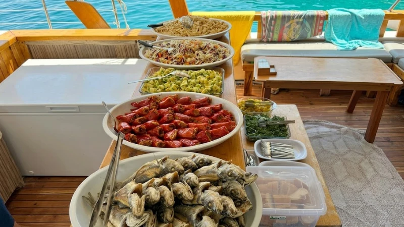
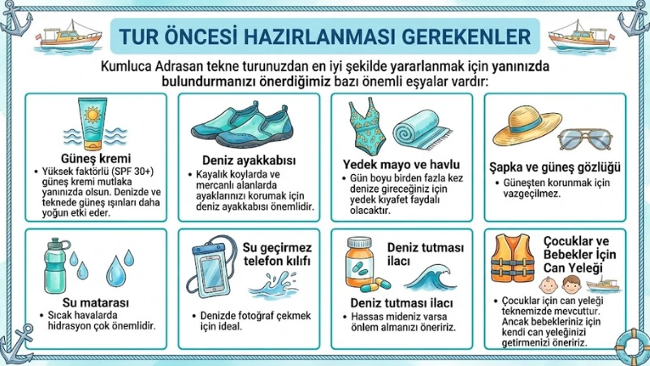

Tekne Turu Bilgi Merkezi — Kumluca Adrasan Rehberi
Adrasan ve Suluada tekne turu hakkında merak ettiğiniz her şeyi burada bulabilirsiniz. 2026 güncel bilgileri.
1. 2026 Tekne Turu Fiyatları ve Rezervasyon Gerekli mi?
2026 tekne turu fiyatları sezon içinde değişkenlik gösterebilir. En uygun fiyatlı çözümler sunan Bayaris Tekne Turu olarak, her bütçeye hitap eden seçeneklerimiz bulunmaktadır. Kumluca Adrasan'da fiyatlarımız kişi başı hesaplanmakta olup, öğle yemeği, meyve ikramları ve çay/kahve servisi dahildir.
Rezervasyon gerekli mi? Evet, özellikle yaz sezonunda (Haziran-Eylül) ve hafta sonları teknelerimiz hızla dolmaktadır. Kumluca Adrasan'da erken rezervasyon yaparak hem yerinizi garanti altına alabilir hem de erken rezervasyon indirimlerinden yararlanabilirsiniz. WhatsApp üzerinden hızlı bir şekilde rezervasyon talebinde bulunabilirsiniz.
Ödeme seçeneklerimiz arasında nakit, banka havalesi ve kredi kartı bulunmaktadır. Grup rezervasyonlarında özel indirimler uygulanmaktadır. Aile tekne turu paketlerimizde çocuk indirimleri mevcuttur.

2. Tekne Turu Saatleri ve Rotalar
Tur ne zaman, hangi saatlerde yapılır? Kumluca Adrasan tekne turu saatleri 10:00 - 17:00 arasındadır. Sabah 10:00'da Adrasan limanından kalkış yapılır ve akşam 17:00'de aynı noktaya dönülür. Bu 7 saatlik süre boyunca birden fazla koy ziyaret edilir, her durakta yeterli yüzme ve dinlenme süresi tanınır.
Standart rotamız şu şekildedir:
10:00 — Adrasan Limanı'ndan kalkış ve güvenlik brifingi
10:45 — İlk koyda yüzme molası (Ceneviz veya Sazak)
12:30 — Öğle yemeği servisi (teknede)
13:30 — İkinci koyda yüzme ve keşif
15:00 — Üçüncü koy ve meyve ikramı
16:30 — Son yüzme durağı
17:00 — Adrasan Limanı'na dönüş
Hava koşullarına bağlı olarak rota ve saatlerde küçük değişiklikler yapılabilir. Kaptanımız her zaman en güvenli ve en keyifli rotayı seçmek için yetkilidir.
3. Tekne Turu Yemek, İkram ve Alerji Bilgisi
Öğle yemeği teknede servis edilmektedir. Menümüzde Kumluca'nın taze balığı veya tavuk seçenekleri bulunmaktadır. Yanında mevsim salatası, makarna veya pilav, ekmek ve meze çeşitleri sunulmaktadır.
Meyve ikramları tur boyunca servis edilir. Özellikle öğleden sonra taze mevsim meyveleri misafirlerimize ikram edilmektedir. Çay ve kahve servisi de ücretsizdir.
Çocuk ve alerjen hassasiyeti olan misafirlerimiz için özel menü seçenekleri mevcuttur. Aşağıdaki durumları rezervasyon sırasında bildirmenizi rica ederiz:
Gluten intoleransı veya çölyak hastalığı
Süt ürünü alerjisi
Deniz ürünü alerjisi
Vejetaryen veya vegan beslenme
Çocuk menüsü talebi
Önceden bilgi vermeniz durumunda, mutfağımız sizin için özel hazırlık yapacaktır. Misafirlerimizin sağlığı ve memnuniyeti bizim için önceliklidir.
4. Tur Öncesi Hazırlanması Gerekenler
Kumluca Adrasan tekne turunuzdan en iyi şekilde yararlanmak için yanınızda bulundurmanızı önerdiğimiz bazı önemli eşyalar vardır:
Güneş kremi: Yüksek faktörlü (SPF 30+) güneş kremi mutlaka yanınızda olsun. Denizde ve teknede güneş ışınları daha yoğun etki eder.
Deniz ayakkabısı: Kayalık koylarda ve mercanlı alanlarda ayaklarınızı korumak için deniz ayakkabısı önemlidir.
Yedek mayo ve havlu: Gün boyu birden fazla kez denize gireceğiniz için yedek kıyafet faydalı olacaktır.
Şapka ve güneş gözlüğü: Güneşten korunmak için vazgeçilmez.
Su matarası: Sıcak havalarda hidrasyon çok önemlidir.
Su geçirmez telefon kılıfı: Denizde fotoğraf çekmek için ideal.
Deniz tutması ilacı: Hassas mideniz varsa önlem almanızı öneririz.
Çocuklar için can yeleği teknemizde mevcuttur. Ancak bebekleriniz için kendi can yeleğinizi getirmenizi öneririz.

5. Adrasan, Suluada ve Bayaris Tekne Turu Hakkında
Adrasan, Antalya'nın Kumluca ilçesinde, Likya Yolu'nun denizle buluştuğu noktada yer alan eşsiz bir doğa harikasıdır. Üç kilometrelik kumsalı, çam ormanları ve berrak sularıyla hem yerli hem yabancı turistlerin gözdesidir. Suluada ise Adrasan'dan yaklaşık 1 saatlik tekne yolculuğuyla ulaşılan, Türkiye'nin Maldivleri olarak anılan cennet bir adadır.
Bayaris Tekne Turu olarak, Kumluca Adrasan ve Suluada tekne turu deneyiminizi en üst seviyeye taşımak için çalışıyoruz. "İyi ki" dedirten Bayaris güvencesi ve işinde iyi ekip anlayışıyla hareket ediyoruz. Deneyimli kaptanlarımız, güler yüzlü mürettebatımız ve modern teknelerimizle her detayı düşündük.
Misyonumuz, misafirlerimize sadece bir tekne turu değil, hayatları boyunca hatırlayacakları bir deneyim sunmaktır. Her turumuzda güvenlik standartlarına tam uyum sağlıyor, çevreye duyarlı yaklaşıyor ve misafir memnuniyetini ön planda tutuyoruz.
2026 yılında da aynı heyecan ve özveriyle sizleri Kumluca Adrasan ve Suluada'nın berrak sularında ağırlamaktan mutluluk duyacağız. Hemen rezervasyon yapın, unutulmaz bir gün için ilk adımı atın.